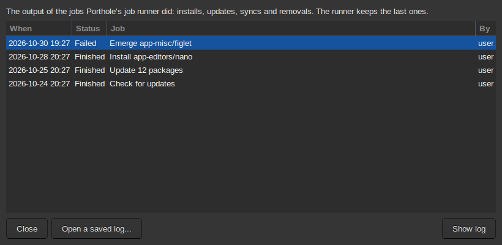

Emerge can print thousands of lines, and the important ones are easy to
miss. Porthole's terminal window colours the different kinds of line and
picks the warnings, cautions and summary messages out into tabs of their own.
The same window is used in three ways:
The job window follows the runner's jobs: installs, updates,
removals, syncs, and custom commands run as root. It opens when you start
one, and from Show progress in Updates or the tray. The job runs as
root in the background, so closing the window doesn't stop it; it only
stops showing it. There is only ever one job window.
The log viewer shows the log of a job that has finished, or a
log you saved. Nothing runs there. Open it from Porthole, Job
Logs… or Job logs in the tray; the tray's Show what
failed opens the log of a job that failed.
The terminal runs what Porthole runs as you, without
administrator rights: pretend runs, emerge --help and
--info, and custom commands run as you.

Job logs: earlier jobs, newest first.
Tabs
Process: everything the job printed, with line numbers.
Commands, the start of each package, warnings, information and errors are
coloured (the colours fit your theme; you can choose your own in
Settings, Porthole, Terminal).
Warnings and Cautions: just those lines, each with the
package it came from. Double-click a line to jump to it in the Process
tab, where the lines around it often explain more.
Summary: messages to read after a build, such as instructions
from a package or reminders to update configuration files. Read it when a
build finishes.
Emerge queue: the jobs the window has followed, or the commands
you ran.
Tabs only appear when they have something in them.
A paused build
A build in the build window pauses while someone uses the computer (see
How updates run). The job window then shows a
bar saying so, with Keep building: watching a build counts as using
the computer, so choose it to let the build run while you are there.
Stopping a job
The Kill button (or Process, Kill Process) in the job
window asks what to do:
Keep running: nothing changes. This is the default.
Stop, finish later: the package being built is stopped; packages
already installed stay installed. What an install didn't get to goes back
in the install queue as Unfinished: ...; processing the queue plans
it again, leaving out anything built meanwhile.
Stop, drop the rest: the same, but the rest isn't put back in the
queue. If the job had already replaced libraries other programs still use,
Porthole offers to rebuild those programs as a job of its own.
Jobs that aren't installs (updates, syncs, removals) have Keep
running and Stop. Stopping asks for the administrator password,
like starting.
Menus
Process: Kill Process (above); Save Log and
Save Log As save the tab you are looking at; Open Log opens a
saved log in the log viewer; Close Window (a job keeps
running).
Edit: Copy, and Clear, which empties the tabs.
Queue: move or remove entries. In the job window, removing an
entry only stops showing that job; it doesn't cancel it.